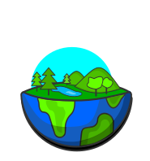

GoBrik is offline for an Upgrade!
We're doing some scheduled maintenance to improve GoBrik today.
We're sorry for the inconvenience. GoBrik will be back in 2 hrs.


Gobrik global ecobricking data is made available by the Ecobrick Alliance under a Creative Commons Attribution-ShareAlike 4.0 International License.
Please attribute all usage to "GoBrik.com/#global - Global Ecobrick Alliance" using the same license.